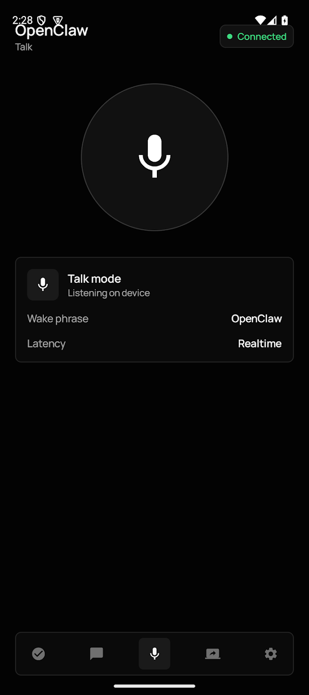
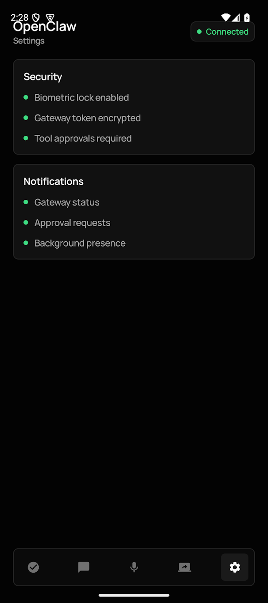
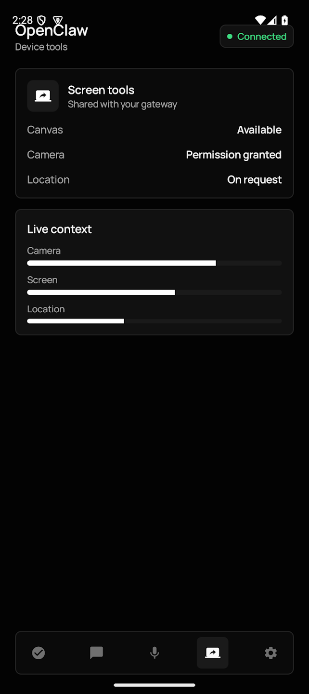
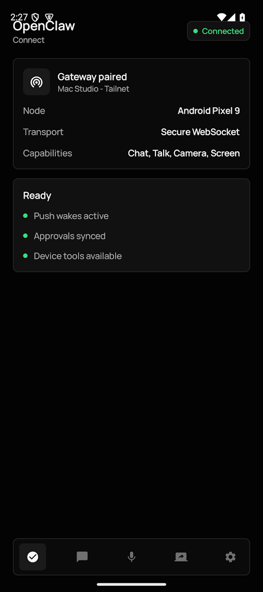
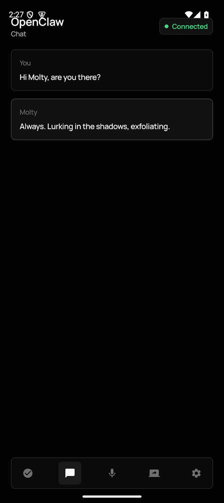

모바일 앱 출시
IT소식에 따르면, OpenClaw 공식 계정이 6월 30일 X 플랫폼을 통해 Apple App Store와 Google Play Store에 네이티브 모바일용 OpenClaw 애플리케이션을 출시했다고 발표했습니다. 이를 통해 사용자는 스마트폰으로 언제 어디서나 "용새우"를 키울 수 있습니다.
제품 소개
OpenClaw는 용새우 아이콘을 채택하여 중국 내에서 "용새우"로도 불리는 개인 AI 비서 제품입니다. 핵심 특징은 '로컬 우선'으로, 사용자가 게이트웨이, 키, 설정 및 권한을 직접 제어할 수 있는 것이 특징입니다.
주요 기능
OpenClaw는 사용자 기기에서 실행되는 개인 AI 비서입니다. 이 Android 앱을 OpenClaw 게이트웨이와 페어링하면 스마트폰을 보안 노드로 활용하여 채팅, 음성, 승인 및 장치 감지 자동화 등의 기능을 구현할 수 있습니다.
사용자가 수행할 수 있는 기능은 다음과 같습니다:
- QR 코드 또는 설정 코드를 통해 개인 OpenClaw 게이트웨이와 페어링
- Android 기기를 통해 비서와 채팅
- 실시간 통화 모드 및 원클릭 연결 기능 사용
- 스마트폰을 통해 게이트웨이 작업 승인 확인
- 카메라, 화면, 위치 및 알림 등 필요한 경우에만 장치 기능 활성화
- 연결된 워크플로우의 푸시 알림 및 노드 상태 업데이트 수신
보안 및 설정
OpenClaw는 로컬 우선 정책을 채택하고 있습니다. 사용자는 게이트웨이, 키, 설정 및 권한을 직접 제어할 수 있으며, 장치 액세스 권한은 Android 권한 관리 시스템에 의해 관리되며 사용자가 원하는 기능에 대해서만 활성화됩니다.
설정 단계:
- OpenClaw 게이트웨이 설정
- Android 앱 실행 및 게이트웨이와 페어링
- 스마트폰을 통해 채팅, 통화 모드, 승인 및 자동화 기능 시작
총평
OpenClaw는 로컬 우선 원칙을 기반으로 한 개인 AI 비서로, 이번에 출시된 모바일 앱을 통해 스마트폰을 보안 노드로 활용할 수 있게 되었습니다. 사용자는 게이트웨이와 페어링하여 채팅, 음성, 승인 및 자동화 등 다양한 기능을 제어할 수 있습니다.
移动端应用正式上线
OpenClaw 已在 Apple App Store 和 Google Play Store 上架原生移动版应用。作为一款定位为“本地优先”的个人 AI 助手，该产品允许用户通过手机随时进行交互，并提供更便捷的远程控制与自动化功能。
核心功能与操作
用户可以将移动设备与私有 OpenClaw 网关配对，将手机作为安全节点。主要功能包括：
- 支持通过二维码或设置码与私有网关快速配对
- 提供实时通话模式和一键通功能
- 在手机端查看并处理网关操作审批
- 支持按需开启摄像头、屏幕、位置及通知等设备权限
- 接收已连接工作流的推送唤醒和节点状态更新
“本地优先”安全策略
OpenClaw 坚持“本地优先”原则，确保用户能够完全掌控网关、密钥、配置和权限。所有设备访问权限均由系统管理，仅在用户明确授权的情况下启用相关功能，保障用户数据的安全性。
总结
OpenClaw 正式推出支持 iOS 和 Android 的移动端应用，旨在提供一个基于“本地优先”理念的个人 AI 助手。用户可以通过手机与私有网关配对，实现语音、聊天及自动化等功能，同时确保数据的安全性和权限的可控性。
モバイルアプリのリリース
ITニュースによると、OpenClawの公式アカウントが6月30日にXを通じて、Apple App StoreおよびGoogle Play Store向けにネイティブモバイル用OpenClawアプリケーションをリリースしたと発表しました。これにより、ユーザーはスマートフォンを使っていつでもどこでも「龍翔（Dragon Shrimp）」を育むことができます。
製品紹介
OpenClawは龍翔のアイコンを採用しており、中国国内では「龍翔」とも呼ばれる個人用AIアシスタント製品です。最大の特徴は「ローカルファースト」であり、ユーザーがゲートウェイ、キー、設定、権限を直接制御できる点が特徴です。
主な機能
OpenClawはユーザーのデバイス上で動作する個人用AIアシスタントです。このAndroidアプリをOpenClawゲートウェイとペアリングすることで、スマートフォンをセキュアなノードとして活用し、チャット、音声、承認、およびデバイス検知の自動化などの機能を実装できます。
ユーザーが利用可能な機能は以下の通りです：
- QRコードまたは設定コードを介した個人のOpenClawゲートウェイとのペアリング
- Androidデバイスを通じたアシスタントとのチャット
- リアルタイム通話モードおよびワンクリック接続機能の利用
- スマートフォンを通じたゲートウェイ作業の承認確認
- カメラ、画面、位置情報、通知など、必要な場合のみデバイス機能を有効化
- 接続されたワークフローのプッシュ通知およびノード状態の更新受信
セキュリティと設定
OpenClawはローカルファーストの方針を採用しています。ユーザーはゲートウェイ、キー、設定、権限を直接制御でき、デバイスへのアクセス権限はAndroidの権限管理システムによって管理され、必要な機能のみが有効になります。
設定手順：
- OpenClawゲートウェイの設定
- Androidアプリの起動およびゲートウェイとのペアリング
- スマートフォンを通じたチャット、通話モード、承認、自動化機能の開始
総評
OpenClawはローカルファーストの原則に基づいた個人用AIアシスタントであり、新たにリリースされたモバイルアプリを通じてスマートフォンをセキュアなノードとして活用できるようになりました。ユーザーはゲートウェイとペアリングすることで、チャット、音声、承認、自動化など多岐にわたる機能を制御することが可能です。
まとめ
OpenClawは「ローカルファースト」を掲げる個人用AIアシスタントで、新しくリリースされたモバイルアプリによりスマートフォンをセキュアなノードとして活用可能になりました。ユーザーはゲートウェイとペアリングすることで、チャットや音声操作、自動化など多岐にわたる機能を直接制御できます。
Mobile App Launch
According to IT news, OpenClaw's official account announced on June 30 via the X platform that they have released native mobile applications for both the Apple App Store and Google Play Store. This release allows users to "raise" their "Dragon Shrimp" anytime and anywhere using a smartphone.
Product Introduction
OpenClaw is a personal AI assistant featuring a "Dragon Shrimp" icon, also referred to as "Dragon Shrimp" in China. Its core feature is its "local-first" approach, which ensures that users have direct control over gateways, keys, settings, and permissions.
Key Features
OpenClaw is a personal AI assistant that runs directly on the user's device. When this Android app is paired with an OpenClaw gateway, it enables the smartphone to function as a secure node for features such as chat, voice interaction, approval, and automated device detection.
The functions available to users include:
- Pairing with personal OpenClaw gateways via QR codes or setup codes
- Chatting with the assistant through Android devices
- Utilizing real-time call mode and one-click connection features
- Confirming gateway task approvals through a smartphone
- Activating device functions (such as camera, screen, location, and notifications) only when necessary
- Receiving push notifications for connected workflows and node status updates
Security and Setup
OpenClaw adopts a local-first policy. Users maintain direct control over gateways, keys, settings, and permissions; device access permissions are managed by the Android permission management system and are only activated for specific functions requested by the user.
Setup steps:
- Configure the OpenClaw gateway
- Launch the Android app and pair it with the gateway
- Initiate chat, call mode, approvals, and automation features via smartphone
Summary
OpenClaw is a local-first personal AI assistant that utilizes mobile apps to transform smartphones into secure nodes for various interactions. By pairing with a gateway, users can manage chat, voice commands, and automated workflows while maintaining direct control over their device's permissions and settings.
移动端应用上线
OpenClaw 已在 Apple App Store 和 Google Play Store 上架原生移动版应用。该应用允许用户通过手机与个人 AI 助手进行交互，并将手机作为安全节点，实现聊天、语音、审批以及设备感知自动化等功能。
核心功能特性
用户可以通过 OpenClaw 移动端执行以下操作：
- 通过二维码或设置码与私有 OpenClaw 网关配对
- 在 Android 设备上进行聊天，并支持实时通话模式和一键通功能
- 通过手机查看网关的操作审批
- 按需开启摄像头、屏幕、位置和通知等设备权限
- 接收已连接工作流的推送唤醒及节点状态更新
本地优先策略
OpenClaw 采用“本地优先”策略，用户能够完全掌控网关、密钥、配置和权限。所有设备访问权限均由系统管理，仅在用户选择启用相关功能时才进行授权。
总结
OpenClaw 正式推出支持 iOS 和 Android 的移动端应用，旨在提供一个强调“本地优先”的个人 AI 助手。用户可通过手机与私有网关配对，实现语音通话、自动化审批以及多种设备功能的集成控制。
モバイルアプリのリリース
ITニュースによると、OpenClawは6月30日に公式X（旧Twitter）を通じて、Apple App StoreおよびGoogle Play Storeにネイティブ対応のモバイル向けOpenClawアプリケーションをリリースしたと発表しました。これにより、ユーザーはスマートフォンを通じていつでもどこでも「龍蝦（Long Shrimp）」を育成・操作することが可能になります。
製品紹介
OpenClawは、中国国内で「龍翔」とも呼ばれるエビのアイコンを採用した個人向けAIアシスタントです。最大の特徴は「ローカル優先（Local First）」であり、ユーザーがゲートウェイ、キー、設定、および権限を直接制御できる仕組みを備えています。
主な機能
OpenClawはユーザーのデバイス上で動作する個人用AIアシスタントです。モバイルアプリをOpenClawゲートウェイとペアリングすることで、スマートフォンをセキュアなノードとして活用し、チャット、音声、承認、およびデバイス検知の自動化などの機能を実現できます。
提供される主な機能は以下の通りです：
- QRコードまたは設定コードによるプライベートOpenClawゲートウェイとのペアリング
- モバイルデバイスを通じたアシスタントとのチャット
- リアルタイム通話モードおよびワンクリック接続機能の利用
- スマートフォンを通じたゲートウェイ操作の承認確認
- カメラ、画面、位置情報、通知など、必要な場合のみ特定のデバイス機能を有効化
- 接続されたワークフローのプッシュ通知およびノード状態の更新受信
セキュリティと設定
OpenClawは「ローカル優先」ポリシーを採用しており、ユーザーがゲートウェイ、キー、構成、権限を完全にコントロールできることを保証します。デバイスへのアクセス権限はシステムによって管理され、ユーザーが明示的に許可した機能のみが有効になるため、データの安全性が確保されます。
設定ステップ：
- OpenClawゲートウェイの設定
- モバイルアプリの起動とゲートウェイとのペアリング
- スマートフォンを通じたチャット、通話モード、承認、および自動化機能の開始
まとめ
OpenClawは「ローカル優先」を基本原則とした個人用AIアシスタントであり、新たにリリースされたモバイルアプリを通じてスマートフォンをセキュアなノードとして活用できるようになりました。ユーザーはゲートウェイとペアリングすることで、チャットや音声、自動化など多岐にわたる機能を、高いセキュリティと権限の制御性を保ちながら操作することが可能です。
Mobile App Launch
According to IT news, OpenClaw announced via its official X account on June 30 that it has released native mobile applications for both the Apple App Store and Google Play Store. This release allows users to interact with their "Mantis Shrimp" (the nickname for the personal AI assistant) anytime and anywhere using a smartphone.
Product Overview
OpenClaw is a personal AI assistant that adopts a "local-first" philosophy. A key feature of this approach is that users maintain direct control over gateways, keys, settings, and permissions.
Key Features
OpenClaw functions as a personal AI assistant running on the user's device. By pairing the mobile app with an OpenClaw gateway, the smartphone can be utilized as a secure node to enable features such as chat, voice interaction, approval processing, and automated device detection.
Available features include:
- Pairing with a private OpenClaw gateway via QR codes or setup codes
- Chatting with the assistant through Android devices
- Utilizing real-time call mode and one-click connection features
- Confirming and processing gateway operation approvals via smartphone
- Activating specific device permissions (camera, screen, location, and notifications) only when necessary
- Receiving push notifications for connected workflows and node status updates
Security and Configuration
OpenClaw adheres to a "local-first" policy, ensuring users have full control over their gateway, keys, configurations, and permissions. Device access permissions are managed by the system's permission management system and are only activated for specific functions as requested by the user.
Configuration steps:
- Set up the OpenClaw gateway
- Launch the Android app and pair it with the gateway
- Initiate chat, call mode, approvals, and automation features via smartphone
Summary
OpenClaw has launched native mobile applications for iOS and Android to provide a "local-first" personal AI assistant experience. By pairing smartphones with OpenClaw gateways, users can manage voice interactions, automated workflows, and secure notifications while maintaining full control over their data and permissions.





